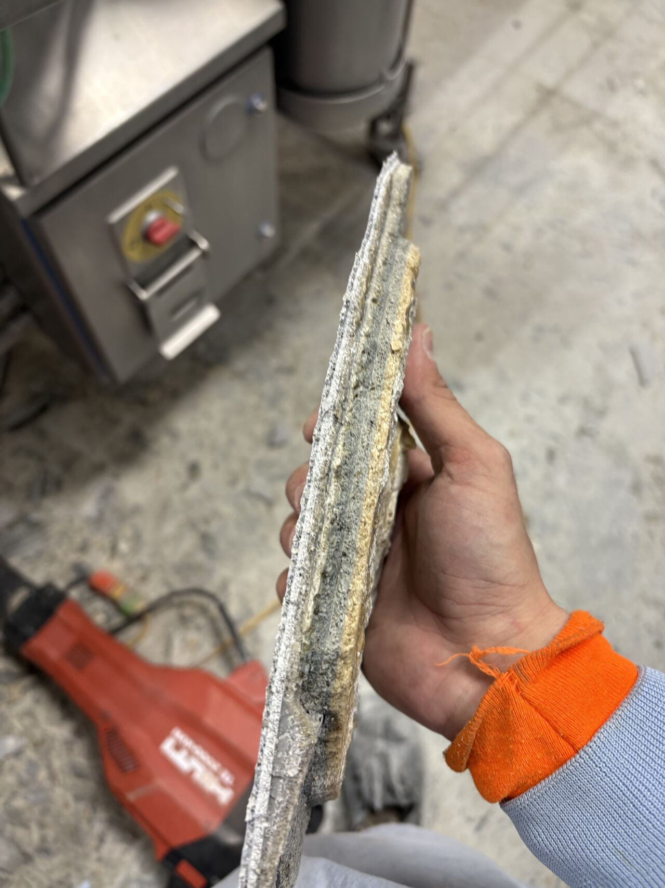
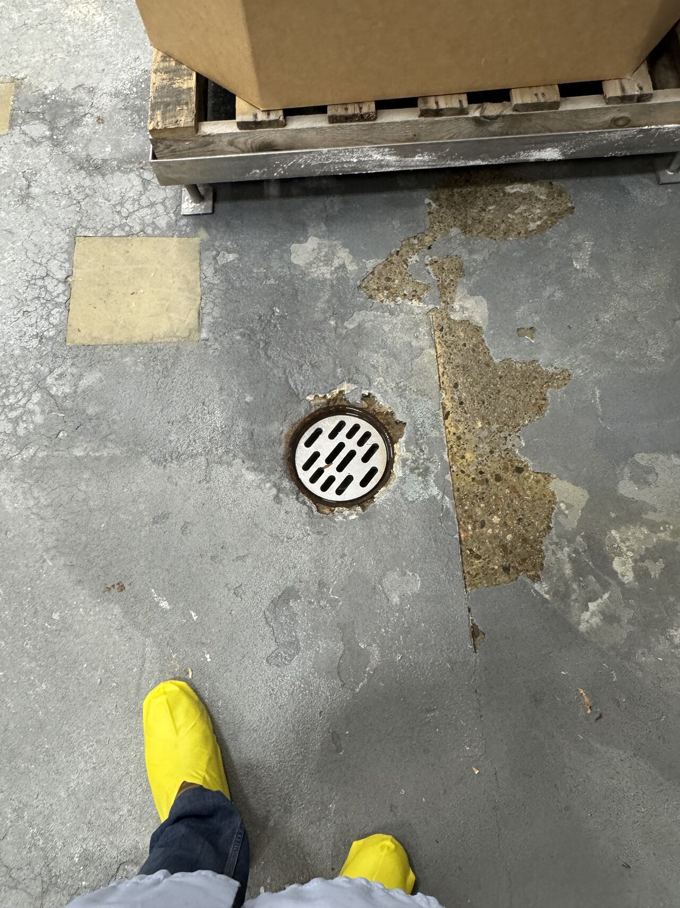
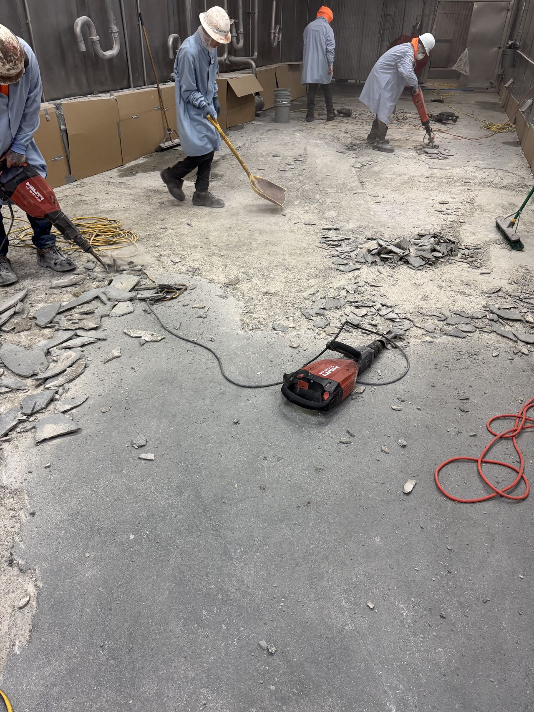
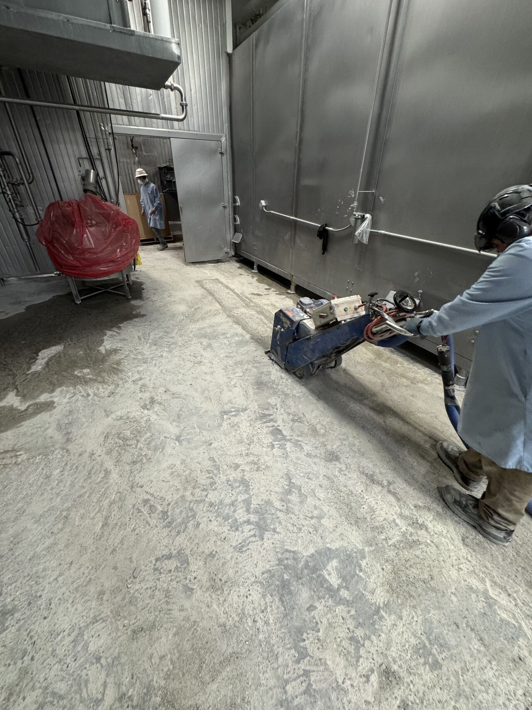
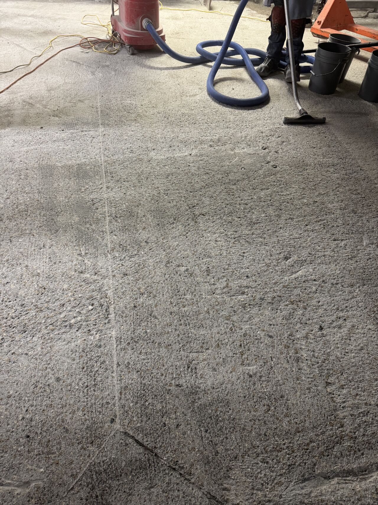
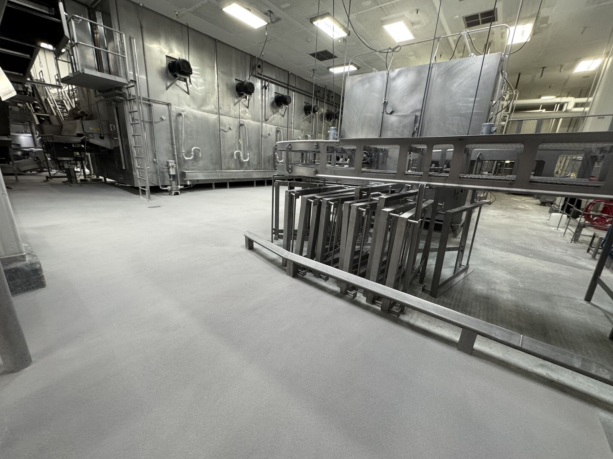
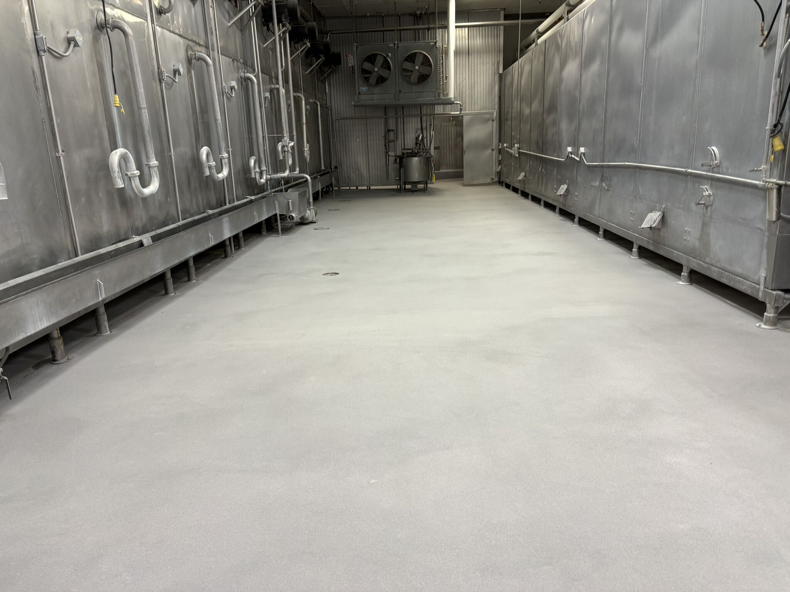
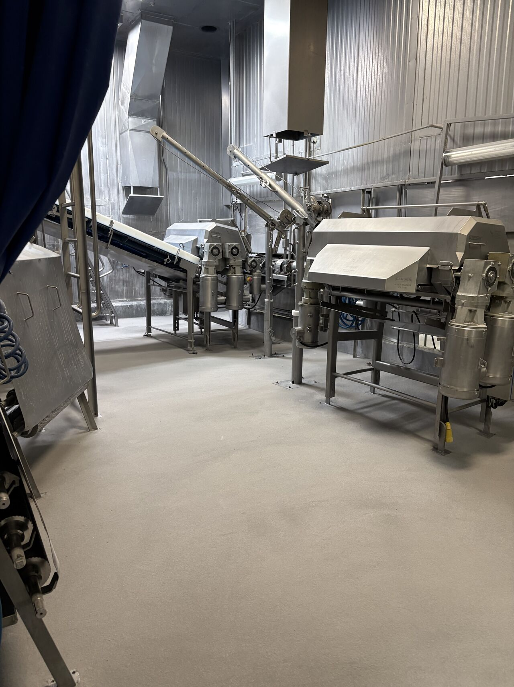
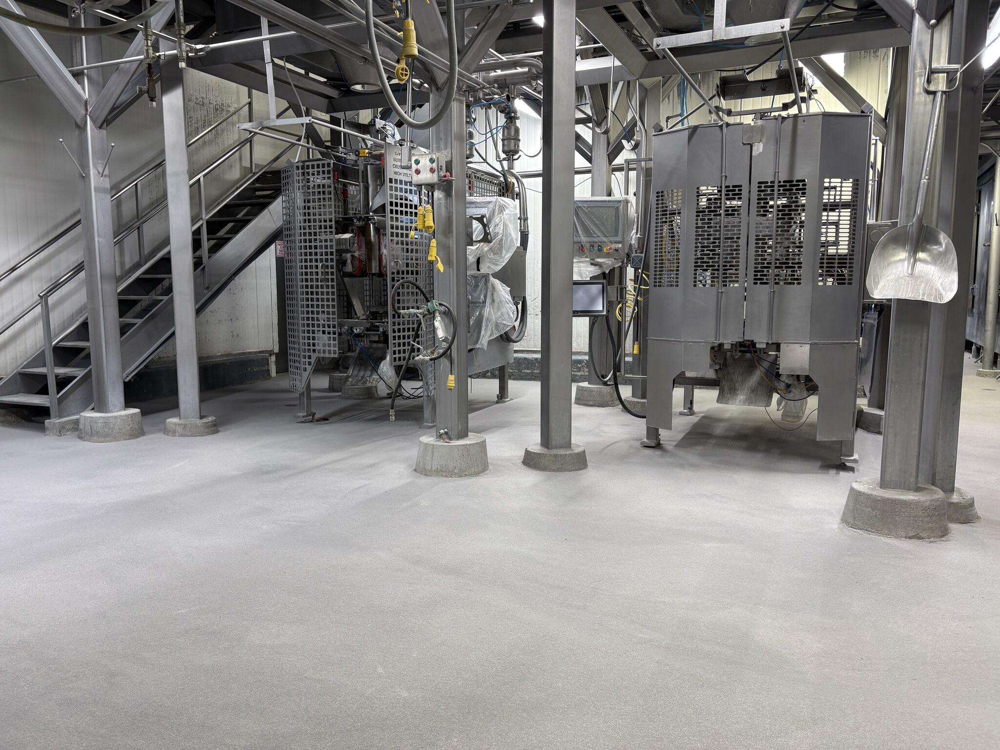
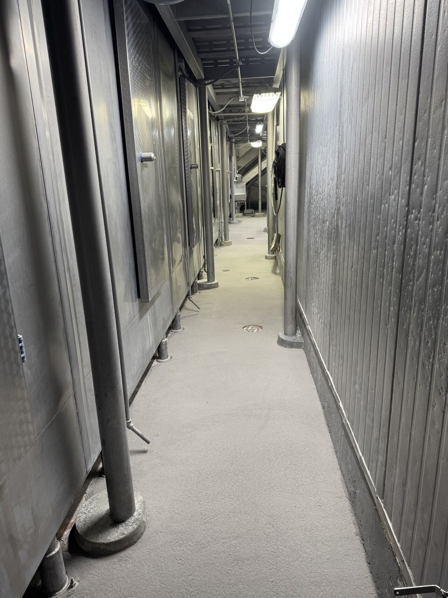

This is what years of "just coat over it" looks like. Layer after layer of coatings applied over failing floors — each one peeling, trapping moisture, and harboring bacteria underneath. Eventually, every layer has to come out. There are no shortcuts in food processing flooring.
The Problem: Layers of Failed Coatings

When a floor coating starts to fail, it's tempting to just apply another coat on top. It's faster, it's cheaper — and it works for a little while. But in a food processing environment, that approach creates a ticking time bomb. Each layer traps moisture and organic material between the coatings, creating the perfect environment for bacterial growth. The floor looks fine on the surface, but underneath it's compromised.

At this meat processing facility, that cycle had repeated for years. By the time we arrived, the floor had multiple layers of failed coatings that all needed to be completely removed down to sound substrate before any new system could be installed.
Surface Preparation: Removing Every Layer



Our crew removed every layer of old coating and scarified the concrete substrate to achieve the proper surface profile for maximum adhesion. This is the most critical step — if you don't get back to sound concrete, nothing you put on top will last.
The Solution: SaniCrete STX
With the substrate prepped and primed, we installed 3/8" of SaniCrete STX with A-25 quartz broadcast across 3,400 square feet. STX is a stainless steel reinforced cementitious urethane — engineered to handle the thermal shock, chemical exposure, and heavy washdowns that destroy conventional coatings.
The Finished Floor





Weekend Turnaround
The facility shut down production on Friday and was back up and running Monday morning. No extended downtime, no lost production. That's the advantage of working with a crew that does this every week — we know how to plan, execute, and deliver on schedule.
The Bottom Line
Coating over a failing floor doesn't fix the problem — it just hides it. If your facility is stuck in that cycle, it's time to invest in a permanent solution. One installation of SaniCrete STX will outlast years of repeated coatings, and you'll never have to worry about what's hiding underneath your floor again.
Products Used
- SaniCrete STX — 3/8" stainless steel reinforced cementitious urethane with A-25 quartz broadcast